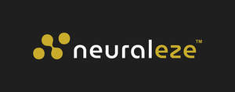

Trade Mark Journal No.2025/050 12 December 2025
UK00004304218 2 December 2025 (41,44)

- Class 41
- Physical fitness education services; Physical-education services; Fitness training services; Physical education services; Health and fitness club services; Health club [fitness] services; Education services relating to yoga; Physical fitness training services; Sports and fitness services; Education services relating to therapeutic treatments; Health and wellness training; Health club services; Personal fitness training services; Dietary education services; Management of education services; Sports education services; Coaching services; Training and education services; Education and training services; Physical training services; Training services in the field of medical disorders and their treatment; Exercise [fitness] training services; Fitness and exercise training services; Fitness club services; Teacher training services; Education services relating to physical fitness; Training services; Sports coaching services; Physical fitness centre services; Management training services; Sports instruction services; Recreation and training services; Exercise [fitness] advisory services; Online education services; Educational and training services; Physical fitness assessment services for training purposes; Bodywork therapy instruction; Provision of educational services relating to fitness; Provision of educational services relating to health; Training services relating to fitness; Health education; Physical health education; Health club services [health and fitness training]; Health and fitness training; Education services relating to health; Provision of educational health and fitness information; Training services relating to health and safety; Health club services [exercise]; Providing of training in the field of health care and nutrition; Education services relating to nutrition; Educational services relating to physical fitness; Physical fitness consultation; Tuition in physical fitness; Physical fitness tuition; Physical fitness instruction; Consultancy relating to physical fitness training; Supervision of physical exercise; Physical fitness instruction for adults and children; Conducting physical fitness conditioning classes; Instruction courses relating to physical fitness; Physical education instruction; Physical education facilities (Provision of -); Conducting training sessions on physical fitness online; Education and training; Education and training consultancy; Educational and training services relating to healthcare; Education, teaching and training; Educational and training services relating to sport; Personal training services; Sporting education services; Education services relating to sports; Conducting of instructional seminars; Conducting courses, seminars and workshops; Conducting instructional courses; Conducting of classes; Conducting workshops [training]; Conducting classes in exercise; Conducting fitness classes; Conducting classes in nutrition; Arranging and conducting of classes; Conducting of courses; Arranging of courses of instruction; Exercise classes; Providing of training; Providing training; Providing courses of training; Providing online training seminars; Providing of training, teaching and tuition; Instructional and training services; Providing courses of instruction; Arranging of presentations for training purposes; Arranging of training courses; Arranging and conducting of training courses; Providing of education; Provision of training courses; Providing instruction and equipment in the field of physical exercise; Provision of training; Workshops for training purposes; Training; Provision of online training; Providing online courses of instruction; Hire of teaching materials; Arranging and conducting of training workshops; Hire of educational materials; Advisory services relating to training; Arranging of displays for training purposes; Development of educational materials; Publication of educational materials; Publication of educational texts; Publishing of educational material; Publication of educational books; Publication of educational teaching materials; Publication of educational printed matter; Publication of multimedia material online; Publication of educational and training guides; Publication of instructional literature; Educational information; Publication of brochures; Educational services.
- Class 44
- Therapy services; Physical therapy services; Physiotherapy services; Massage services; Health clinic services; Pregnancy massage services; Light therapy services; Chiropractic services; Health clinic services [medical]; Health resort services [medical]; Physiotherapy [physical therapy]; Mobile chiropractic services; Mental health services; Health care consultancy services [medical]; Medical health assessment services; Chiropractic services for children; Health care relating to relaxation therapy; Healthcare services; Sports medicine services; Health counseling; Chiropractitioner services; Physical therapy; Therapy (Physical -); Bodywork therapy; Physiotherapy; Personal therapeutic services relating to circulatory improvement; Health care in the nature of health maintenance organizations; Health counselling; Health care relating to osteopathy; Consultancy relating to health care; Health assessment services; Provision of health care services; Consulting services relating to health care; Provision of health information; Advisory services relating to health; Health assessment surveys; Providing health information; Health advice and information services; Information relating to health; Therapeutic treatment of the body; Health care relating to therapeutic massage; Healthcare advisory services; Medical advisory services; Nutritional advisory services; Nutritional advisory and consultation services; Advisory services relating to nutrition; Advisory services relating to diet; Therapeutic treatment of the face; Therapeutical pilates.
Michael Kerr